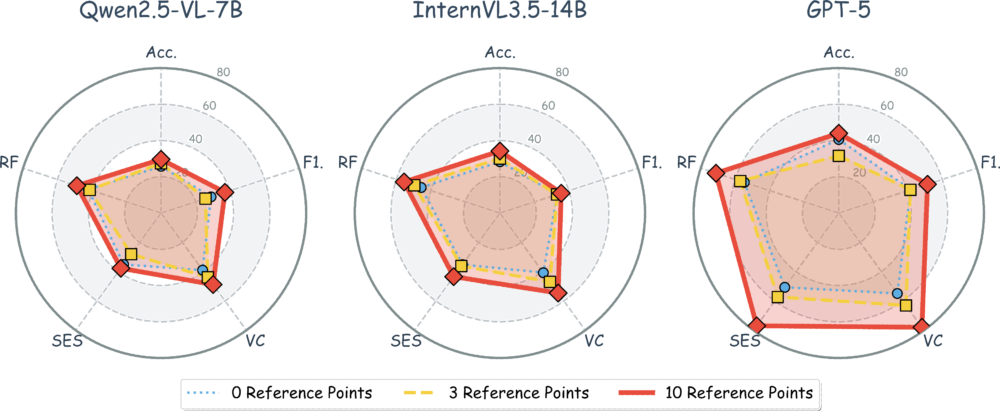
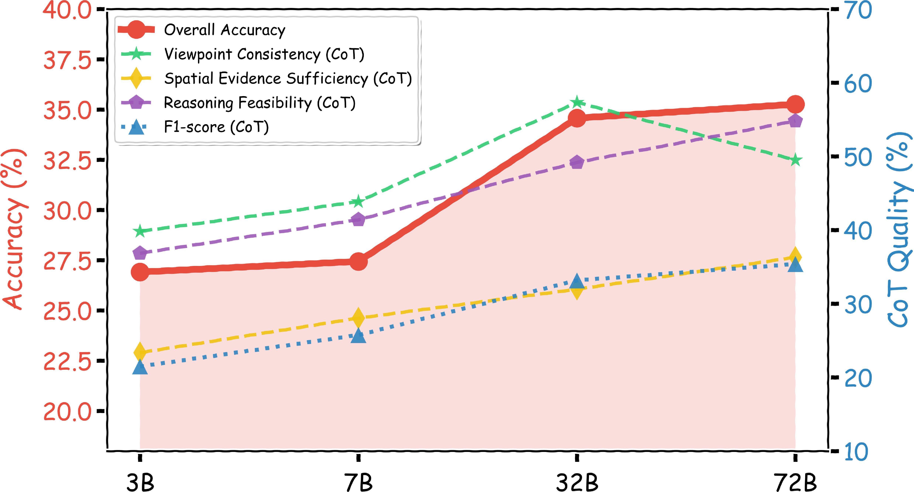
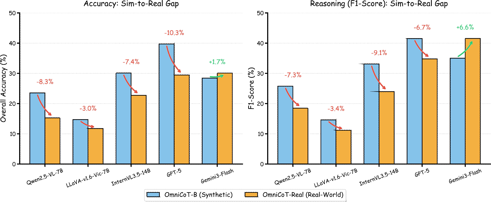

Figure 1: Comparison with existing panoramic benchmarks. While prior works rely on synthetic data and local cues, OmniCoT demands comprehensive multi-hop inference across the full 360° view and uniquely incorporates a manually annotated real-world subset.
OmniCoT-B Benchmark
A new benchmark with 6.7K data points that challenges MLLMs to fully use the 360° space, requiring multi-hop reasoning rather than simple local cues.
OmniCoT-T Training Set
A purpose-built training set with 14.3K structured stepwise Chain-of-Thought annotations linking intermediate steps to panoramic evidence.
OmniCoT-R1 Model
A baseline model developed via a two-stage strategy: SFT for structured reasoning and GRPO to enhance complex multi-step spatial consistency.
OmniCoT-Real
A manually annotated real-world subset of 1K panoramas to quantify the Sim-to-Real gap in current panoramic reasoning models.
Dataset Statistics
OmniCoT exhibits broad lexical coverage and balanced question-type composition across the See-Locate-Move taxonomy.

[SEE] Multi-hop Viewpoint Transformation
Tests the MLLMs' ability to decouple their view from the camera's pose and mentally synthesize views from arbitrary angles. It includes Multi-Step Orientation Tracking (MOT) and Relative Angular Calculation (RAC).
[LOCATE] Inter-Object Spatial Relationship
Evaluates reasoning about inter-object spatial layouts as a structured layout of interconnected entities. It involves Multi-Hop Object Identification (MOI) and Multi-Hop Direction Identification (MDI).
[MOVE] Embodied Action Simulation
Challenges MLLMs to execute virtual movements and predict the visual consequences of these actions. It features Pure Translational Movement (PTM) and Rotation-Translational Movement (RTM).
OmniCoT translates 3D scene geometry into structured language representation, generates multidimensional candidate questions (See, Locate, Move), and applies rigorous dual-LLM reasoning judges to select high-quality QA pairs.

Figure 2: The hybrid pipeline for automated generation and expert supervision of OmniCoT datasets.
Performance of SoTA MLLMs on the OmniCoT-B Benchmark, measuring both Accuracy (See/Locate/Move) and CoT Quality (Precision/Recall/F1/VC/SES/RF).
| Model | Accuracy Evaluation | Chain-of-Thought Evaluation | ||||||||
|---|---|---|---|---|---|---|---|---|---|---|
| See | Locate | Move | Overall | Pre. | Rec. | F1 | VC | SES | RF | |
| Open-Source MLLMs | ||||||||||
| Qwen2.5-VL-3B-Instruct | 34.27 | 17.15 | 31.43 | 26.90 | 26.17 | 18.23 | 21.49 | 36.85 | 23.36 | 39.82 |
| Qwen2.5-VL-7B-Instruct | 33.77 | 15.53 | 24.33 | 23.53 | 34.60 | 20.52 | 25.76 | 43.85 | 28.05 | 41.40 |
| Qwen2.5-VL-32B-Instruct | 47.84 | 21.93 | 31.99 | 32.39 | 42.05 | 27.39 | 33.17 | 57.33 | 31.97 | 49.18 |
| Qwen2.5-VL-72B-Instruct | 52.03 | 23.69 | 35.05 | 35.26 | 46.57 | 28.53 | 35.39 | 49.51 | 36.30 | 54.80 |
| Qwen3-VL-8B-Instruct | 41.52 | 18.73 | 26.59 | 27.56 | 61.22 | 29.48 | 39.80 | 85.09 | 79.05 | 63.49 |
| LLaVA-OneVision-1.5-8B | 42.40 | 14.61 | 29.95 | 27.51 | 36.99 | 19.53 | 25.56 | 49.88 | 21.84 | 44.43 |
| LLaVA-v1.5-7B | 15.00 | 9.82 | 16.80 | 13.76 | 30.56 | 12.93 | 20.04 | 37.66 | 14.72 | 43.76 |
| LLaVA-v1.5-13B | 21.01 | 14.17 | 11.71 | 15.02 | 40.88 | 16.60 | 23.62 | 35.70 | 14.93 | 42.76 |
| LLaVA-v1.6-Mistral-7B | 22.01 | 17.24 | 11.40 | 16.31 | 35.18 | 17.64 | 23.49 | 34.80 | 22.56 | 37.64 |
| LLaVA-v1.6-Vicuna-7B | 11.13 | 12.63 | 19.24 | 14.70 | 30.56 | 9.60 | 14.61 | 28.52 | 25.41 | 35.66 |
| LLaVA-v1.6-Vicuna-13B | 16.32 | 15.00 | 22.33 | 18.07 | 30.40 | 11.31 | 16.48 | 31.36 | 16.41 | 37.12 |
| InternVL3.5-14B | 41.77 | 20.35 | 31.64 | 30.11 | 40.54 | 27.99 | 33.11 | 46.94 | 36.18 | 49.61 |
| Closed-Source MLLMs | ||||||||||
| ChatGPT-4o | 51.97 | 15.18 | 33.65 | 31.58 | 42.46 | 25.51 | 31.87 | 62.99 | 42.03 | 51.41 |
| GPT-5 | 57.29 | 24.40 | 42.71 | 39.72 | 51.43 | 34.79 | 41.51 | 63.05 | 57.30 | 57.10 |
| Doubao-1.5-Vision-Pro | 54.91 | 8.38 | 28.08 | 27.77 | 45.47 | 22.53 | 30.13 | 71.02 | 42.85 | 47.95 |
| Doubao-1.8 | 57.09 | 23.87 | 41.14 | 38.90 | 42.56 | 29.92 | 35.13 | 66.29 | 49.94 | 55.79 |
| Gemini3-Flash | 47.52 | 14.17 | 29.29 | 28.43 | 79.30 | 22.46 | 35.01 | 70.22 | 46.54 | 68.73 |
| GLM-4.5v | 53.15 | 15.05 | 28.60 | 29.95 | 47.82 | 23.07 | 31.12 | 66.98 | 38.31 | 56.63 |
| Step3 | 48.40 | 16.71 | 33.69 | 31.23 | 58.59 | 22.53 | 32.55 | 63.71 | 36.96 | 59.49 |
| Grok-4 | 54.40 | 19.30 | 37.04 | 34.99 | 48.28 | 29.21 | 36.40 | 55.36 | 53.88 | 48.65 |
| Qwen3-Max | 52.03 | 6.19 | 12.97 | 20.58 | 43.88 | 22.03 | 29.33 | 72.76 | 38.39 | 57.48 |
SFT + GRPO
Building upon OmniCoT-T, we develop OmniCoT-R1 via a two-stage strategy. Supervised Fine-tuning (SFT) first anchors reasoning to panoramic evidence (e.g., bearings, proximity). Initialized from this SFT checkpoint, Group Relative Policy Optimization (GRPO) then penalizes geometrically incoherent paths to consolidate global 360° spatial consistency.
| Model | Accuracy Evaluation | Chain-of-Thought Evaluation | ||||||||
|---|---|---|---|---|---|---|---|---|---|---|
| See | Locate | Move | Overall | Pre. | Rec. | F1 | VC | SES | RF | |
| Qwen2.5-VL-7B-Instruct | 33.77 | 15.53 | 24.33 | 23.53 | 34.60 | 20.52 | 25.76 | 43.85 | 28.05 | 41.40 |
| OmniCoT-R1 (SFT) | 59.41 | 39.44 | 52.06 | 49.31 | 42.89 | 34.22 | 38.07 | 46.25 | 57.87 | 53.93 |
| OmniCoT-R1 (SFT+GRPO) | 67.97 | 51.82 | 61.34 | 59.54 | 55.81 | 47.19 | 51.14 | 59.20 | 66.64 | 63.21 |
1. Divergent Impact of CoT on MLLMs
For open-source models, CoT acts as an effective panoramic spatial navigator. As shown in the table below, forcing models to "think" (w/ CoT) generally improves their overall reasoning ability compared to direct answering (w/o CoT). Conversely, forcing CoT on closed-source models (e.g., Gemini3-Flash) actively degrades their accuracy. The verbose generation of long reasoning steps inherently carries a risk of cumulative hallucination, which currently outweighs the logical benefits of CoT for top-tier closed-source models. We also observe a paradoxical "Reasoning-Answer Mismatch" or "linguistic blind-navigation", revealing that their internal reasoning process is often driven by text priors rather than true cross-modal spatial perception.
| Model | w/o CoT | w/ CoT | Δ |
|---|---|---|---|
| Open-Source MLLMs | |||
| Qwen3-VL-8B-Instruct | 25.39 | 27.56 | +2.17 |
| Qwen2.5-VL-72B-Instruct | 26.51 | 35.26 | +8.75 |
| InternVL3.5-14B | 23.79 | 30.11 | +6.32 |
| LLaVA-v1.5-7B | 4.91 | 13.77 | +8.86 |
| Close-Source / API MLLMs | |||
| Qwen3-Max | 25.39 | 20.58 | -4.81 |
| GPT-5 | 42.66 | 39.72 | -2.94 |
| Doubao-1.5-Vision-Pro | 30.96 | 27.76 | -3.20 |
| Gemini3-Flash | 39.97 | 28.44 | -11.53 |
2. The Impact of Spatial Anchor Density
Increasing the number of spatial anchors yields a "precision dividend" across most MLLMs. These reference points serve as global coordinate "pins" that mitigate spatial drift. Providing even a few anchors significantly activates the latent spatial reasoning capabilities of top-tier models like GPT-5.

3. Scaling vs. Bottlenecks
While increasing parameter count broadens MLLM capabilities for panoramas, simple scaling eventually hits a plateau. The performance leap from 7B to 32B is substantial, yet the push to 72B yields only minor gains. Explicitly optimizing spatial reasoning via post-training is a more promising path forward.

4. Sim-to-Real Gap
Transitioning from synthetic to real-world panoramas exposes a substantial performance gap. Models struggle with fine-grained relationship reasoning amidst authentic lens distortion and object occlusion, emphasizing the indispensable role of real-world panoramic data.

@article{he2026omnicot,
title={OmniCoT: A Benchmark for Global and Multi-Step Panoramic Reasoning},
author={He, Haocong and Liao, Chenfei and Wen, Zichen and Dongfang, Zihao and Zheng, Xu and Ren, Bin and Su, Chang and Zhang, Zixin and Chen, Harold Haodong and Zhang, Hongfei and Li, Weijia and Yang, Kailun and He, Conghui and Hu, Xuming and Sebe, Nicu and Zhang, Linfeng},
journal={arXiv preprint},
year={2026}
}